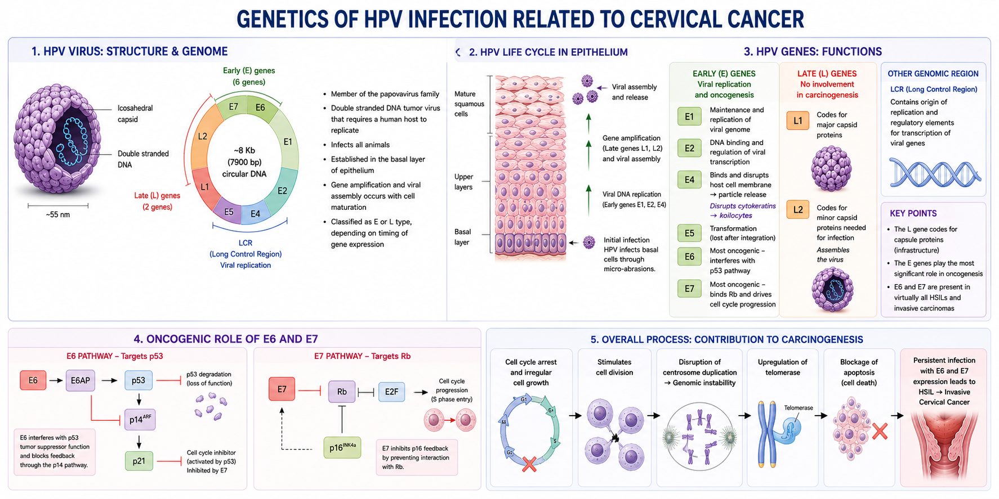

Human Papillomavirus
On This Page
Human Papillomavirus
- Practically all cervical cancers and thus precursor lesions are associated or partially associated with the Human Papillomavirus (HPV).
- HPV is the most commonly sexually transmitted infection worldwide
- 50 million people are infected in the US
- The prevalence of HPV worldwide is 10.4%
- Highest rates are in Africa at 22%
- Europe is 6.6%, Asia is 8.3%
- Eastern Africa is the highest in the world at 35.4%, followed by Russia and Eastern Europe at 29.1%
- Males are usually the source of infection
- Age of first coitus and number of partners increases risk of infection
- Women bear disease burden more than men
- As high as 90% sexually active women infected
- Higher rates of partners leads to higher risk and rate of infection
- Most individuals are asymptomatic
- Virus is very contagious but needs direct contact
- It has bee isolated in swimsuits and on toilet seats
- Younger women generally have a higher prevalence rate (number of infected in a given time)
- The rates are as high as 30% in late teens and early twenties
- Peak incidence is 16-25 years old
- Ectopy exposes squamocolumnar junction
- Inadequate cervical mucus production
- Cervix becomes less resistant to trauma
- Adolescents are more susceptible
- The rate falls (5%) during the reproductive years
- Begins to rise again in 40s and 50s
- Not transmitted to children during pregnancy and birth
HPV Persistance
- Most infections go away (transient) like a cold
- Younger women typically clear faster, resolve with no intervention
- Typically in a year
- May get re-infected from the same or different partners
- Depends on female's immune defense and HPV viral type
- Persistent HPV infection is the main risk factor for developing cervical cancer
- High risk HPV types are persistent
- Viral type persistenceL defined as detection of same specific HPV DNA type one or more years later
- Length of HPV viral infection increases risk of progression to cancer
- Factors that increase persistence:
- Genetics: ex. autosomal recessive epidermodysplasia verruciformis
- Smoking: introduces carcinogens
- Multiparity: alters immune status
- Long term oral contraceptive use: leads to cervical ectopy and exposure of T-zone
- Nutritional deficiency: Vitamin A, B, and C deficiency
- Immune status:
- HIV+ and other diseases
- HIV+ women have higher prevalence of cervical disease and progress more rapidly to cancer
- Cervical cancer is an HIV defining disease: women who rapidly develop cervical cancer test for HIV
- Lesser risk factors:
- Co-STI infection: due to inflammation
- Herpes, CMV, and Chlamydia
- Trauma: causes defects and tears which increase inoculation of anterior lip of cervix
- Most susceptible site of ectopy
- Tears can happen in childbirth and intercourse
- Steroid hormone: progesterone produces ectopy which helps oncogenic properties
- DES
- Estrogenic environment gene expression
- Can also damage viral DNA
- Male factor:
- Alkaline semen inhibits normal flora
- Aids in transmission and immune suppression
Genetics of HPV
- HPV is a member of the papovavirus family and requires a human host to replicate
- It is a double stranded DNA tumor virus
- HPV infects all animals
- It is established in the basal layer of epithelium
- Gene amplification and viral assembly occurs with cell maturation
- Genetically, it consists of an 8 Kb (7900 base pairs) circular DNA strand within an icosahedral capsule
- The DNA strand contains 6 "E" (early) genes and 2 "L" (late) genes
- There is also a region that codes for the viral replication process
- The virus is classified as E or L type, depending on the timing of the gene expression
- The L gene codes for capsule proteins
- The E genes play the most signifiact role in oncogenesis
- Of the E genes, E6 and E7 are the most oncogenic
- E genes: Viral replication and oncogenesis
- E1 maintence and replication of viral genome
- E2 DNA binding and regulation of viral transcription
- E4 binds and disrupts host cell membrane leading to particle release
- Disrupts cytokeratins leading to koilocytes in cytoplasm
- E5 transformation, is lost with integration of HPV virus to host
- L genes: No involvement in carcinogenesis
- Provides the infrastructure
- L1 codes for major capsid proteins
- L2 codes for minor capsid proteins needed for infection
- Assembles the virus
- E6 and E7 are present in virutally all HSILs and invasive carcinomas
- E7 binds to Rb the host retinoblastoma (Rb) tumor suppressor gene
- E6 acts by interfering with the host p53 tumor suppression gene function and blocks feedback
- Feedback blockage is done through the p14 pathway
- The p14 pathway is further blocked by E7 inhibition of p21, which is a cell cycle inhibitor activated by p53
- E7 also prohibits p16 feedback by preventing interaction with Rb
- Overall Process:
- Cell cycle arrest and irregular cell growth
- Stimulates cell division
- Mediates disruption of centrosome duplication leading to genomic instability
- E6 also mediates upregulation of the telomerase and is associated with the blockage of apoptosis (cell death)

HPV Life Cycle
- Requires cells that can divide, and needs steroid hormones (estrogens)
- Infeects basal/reserve cells with ⍺6B4 cell surface protein integration
- Trauma from intercourse gives HPV acess to reserve cells
- Targets basal, endocervical, cervical, and neuroendorcrine cells
- Remains in low amounts (100 episomes/cell)
- Replication occurs when host DNA replicates
- Basal cells replicate and mature to parabasal layer
- Late genes are then expressed
- Completes virion development (genome is replicated and proteins form)
- Upper layer of mature epithelium becomes factory of viral assembly
- Cytologically may see koilocytes in intermediate and superficial layers
- Infectious cells slough off at the surface
- Virus typically clears but can persist in latent state for years
- Depends on the host
Oncogenesis: Development of Malignancy
- HPV is associated with cervical, vulvar, penile, and anal cancers (lower anogenital)
- Direct associated with head and neck cancers (back of throat)
- New findings indicate association with lymphomas, melanomas, and lung cancers
- Disrupt Rb and p53 tumor regulator genes
- Accumulates abnormal DNA and rapidly proliferates and replicates
- Cervical Intraepithelial Neoplasms and thus SILs are associated with infection
- CIN/SIL is early effect of HPV oncogenesis
- Can develop from a few months to two years later
- Development of cervical cancer is late manifestation of infection
- Develops 10-30 years after initial persistent infection
- Viral integration of E6 and E7 into host DNA begins aneuploidy and cancer progression
- Oncogenes transcribed into host cell genome (carcinogenesis)
- Develops from the host-virus interaction in differentiated cells
- These are intermediate and superficial cells
- E6 and E7 cause host synthesis
- E4 believed to disrupt cytokeratins
- May or may not see koilocytes in cytoplasm but viral particles are present
- High expression of E6 and E7
- Possibly develops from LSIL through clonal expansion of undifferentiated cells and proliferation
- No differentiation occurs (no maturation)
- Monoclonal expression
- Rarely aneuploidy
- High E6 and E7 expression
- Viral integration
- Loss of cellular control mechanism, leading to proliferation
- Accumulation of genetic defects
- Aneuploidy and abnormal mitosis
- 3q amplification and 3p deletion results in invasion
- Loss of heterozygosity at 3p14-25, which is linked to loss of fragile histidine triad
- Replication of DNA sequences
- Lack of detection by immune surveillance
- Almost 100% of SIL and cancers (squamous and adenocarcinomas) are associated with HPV
- Possible explanations:
- HPV negativity is caused by technical issues (there but not detected)
- HPV negative cancers are caused by genetic mutations (p53 mutation), which has a worse prognosis
- True non-HPV cancers: may not be detecting all strains of high-risk HPV
- Overexpression of cyclin D, which is linked to carcinogenesis
- There are more than 100 types of HPV isolated
- 40 of these are know to infect the FGT
- The 40 types are divided into low risk and high risk types
- The basis for typing is the frequency of the virus's association with invasive cancer
- Low risk types: 1, 2, 4, 6, 11, 42, 43, 53, 54, 57, and 66
- Low risk types are virtually never associated with HSIL or invasive lesions
- They have little transforming potential
- Type 16 is most commonly associated with invasive squamous cancers
- Type 18 is most commonly associated with endocervical adenocarcinom and neuroendocrine (small cell) carcinoma
- Types 6 and 11 are the most common type associated with benign genital warts
- Important: LSIL does not imply low risk HPV, 85-90% are still associated with high risk types
- HPV type 16 is the most prevalent (40%) of the high risk types, and next is type 18
- Together they account for 71% of the world wide cases of cervical cancer
- 70% of sexually active women develop one or more HPV infections in their lifetime
- Blood tests are not specific, only 50-60% of women have circulating antibodies
- An HPV infection DOES NOT mean clinical disease (dysplasia/cancer)
- Many women clear the viruses after several months or years
- Some women however have repetitive and/or persistent infections
- Persistent infection with a HR type is an important step in the ethnogenesis of invasive cancer
- Process of developing cervical cancer takes years (20 years)
- Most women will develop invasive cancer in their 40s and 50s due to infections received in their teens and twenties
- Detection of HR HPV types has become a routine part of cytologic practice
- LBP makes testing relatively simple
- Often this is done as a reflex test is ASCUS or higher is found
- Some clinicians also want to know about LR infections
- Gardisal and the Cervarix are two vaccines developed against HPV
- They provide immunity against the HR types 16 and 18, and some LR types (6 and 11)
- The goal is to provide immunity before infection occurs
- Adolescents by age of 14 are targeted for vaccination
- Author. Title of article. Journal Name. Year;Volume(Issue):Pages.
- Author. Title of second article. Journal Name. Year;Volume(Issue):Pages.
Low Grade SIL
High Grade SIL
Cancer
HPV-Negative SIL and Cancers
HPV Types
| HPV Type | Clinical Lesion |
|---|---|
| 2, 4 | Common wart |
| 1 | Plantar warts |
| 6, 11 | Condyloma acuminatum |
| 6, 11 | Laryngeal papillomatosis |
| All types | LSIL |
| 16, 18, 31, 33, 35, 39, 45, 51, 52, 56, 58, 59, 68 | HSIL and squamous cancer |
| 16 | Anogenital cancer |
Vaccines
Images